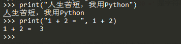
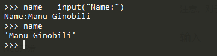
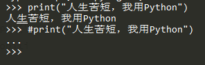

Python中的数据类型、变量、字符编码、输入输出、注释原文出处:本文由博客园博主村雨1943提供。
原文连接:https://www.cnblogs.com/cunyu1943/p/11601898.html
数据类型
- number(数字)
用于存储类型，通常分为int、long、float、complex；
- int：32位机器上占32位，取值范围为-231 ~ 231 - 1；64位机器上占64位，取值范围为-263～263-1；
- long：无指定位宽，但实际使用中由于机器内存有限，故不可能无限大；
- float：用来处理实数，占8个字节，64位，52位表示底，11位表示指数，最后一位表示符号；
- complex：由实数部分和虚数部分组成；
- string(字符串)
用单引号'或双引号"括起来的任意文本，是一种表示文本的数据类型；
- bool(布尔值)
一个布尔值只有True、False两种状态，可通过and、or、not运算；
- 空值
一种特殊的值，用None表示，但不能和0混为一谈，0也是有意义的，而None是一个特殊的空值；
- 常量
顾名思义，所谓常量就是不能变的变量，常用全部大写的变量名来表示；
- list(列表)
用"[]"标识，元素可变，是有序的对象集合，可以随时添加和删除其中的元素；
- tuple(元组)
用"()"标识，内部元素之间用逗号隔开，元素不可变，相当于不可变的列表，也是有序的对象集合，但可以给存储元组的变量复制；
- dict(字典)
用"{}"标识，字典中的键值是无序的，由"key:value"的形式存在，当要取出其中的元素时，只需要通过键来存取，不是通过偏移来存取，具有极快的查找速度；
- set
类似于dict，是一组key的集合，但不存储value，且key是不能重复的；
变量
- 定义
源于数学，在计算机语言表示能储存计算结果或能表示值的抽象概念，可以是任意数据类型，在程序中用变量名表示；
- 变量命名规则
- 只能是数字、字符、下划线的组合；
- 关键字不能声明为变量名；
- 变量名第一个字符不能是数字；
字符编码
- ASCII
8个比特表示一个字节，一个字节所能表示的最大整数为255；
- Unicode
常用两个字节表示一个字符，包括字符集、编码方案等。是为了解决传统的字符编码方案的局限性而产生，为各种语言中的每个字符都设定了统一且唯一的二进制编码，能够满足跨语言、跨平台进行文本转换及处理的要求；
输入与输出
- 输出：用print()在括号之中直接加上字符串或者表达式，然后直接输出想要的结果；
>>> print("人生苦短，我用Python")
人生苦短，我用Python
>>> print("1 + 2 = ", 1 + 2)
1 + 2 = 3

- 输入：用input()函数将值赋给一个变量后，在交互式命令行就会等待用户输入，输入完成后不会有提示，但在交互式命令行输入刚才的变量名后，获取的输入就会在命令行输出；
>>> name = input("Name:")
Name:Manu Ginobili
>>> name
'Manu Ginobili'

注释
>>> print("人生苦短，我用Python")
人生苦短，我用Python
>>> #print("人生苦短，我用Python")
...

- 多行注释
当要多行或者批量注释时，用三引号 ''' '''将所要注释的内容包含起来即可；
'''
print("hello world")
print('welcome to Python world!')
print(1, 2, 3);
'''